Home
What You'll Catch
Fishing Reports
About the Boat
About The Captain
Customer Testimonials
Book A Charter
Photo Gallery
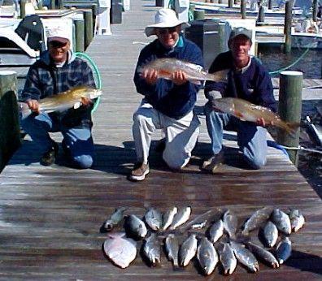
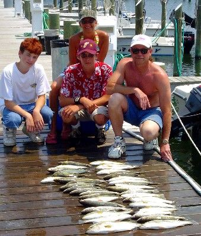
What to Bring
1. Food
2. Beverages
3. Sunscreen
4. Camera
5. Small Cooler
6. Jacket
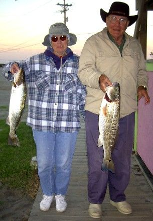
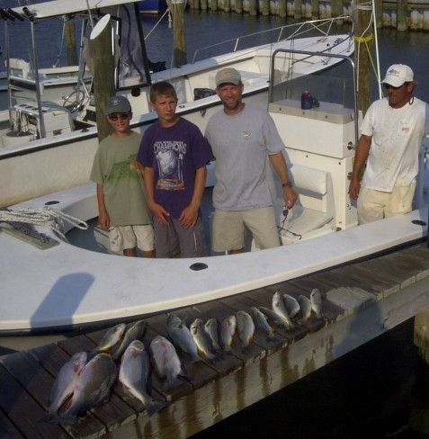
Hatteras
Accomodations
Harbor View Apartments
(252) 986-2166
Hatteras Marlin Motel
(252) 986-2141
Hatteras Sands Campground
(252) 986-2422
The Inn and Villas at Hatteras Landing
(252) 986-1110
Midgett Realty
(252) 986-2841
Sea Gull Motel
(252) 986-2550
Village Marina Motel
(252) 986-2522
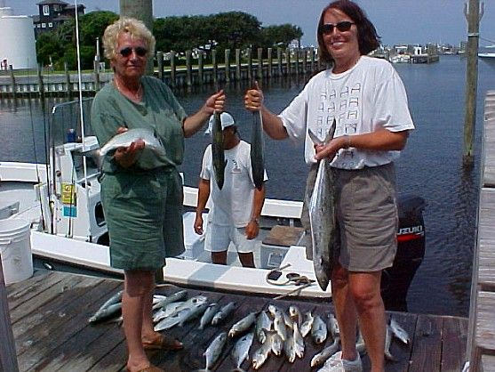

|
|
Recipes
This is a collection of simple recipes so good it'll make you shout "Hallelujah!".
|
Speckled Trout Amandine
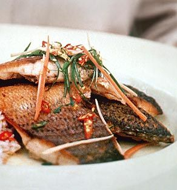
6 (6-8oz) speckled trout fillets, skinned (grey trout can be substituted)
Herb & Spice Mixture:
2 1/2 tablespoons paprika
2 tablespoons salt
2 tablespoons garlic powder
1 tablespoon black pepper
1 tablespoon onion powder
1 tablespoon cayenne pepper
1 tablespoon dried oregano
1 tablespoon dried thyme
1 cup milk
Sauce:
2 cups flour
2 tablespoons butter
1/3 cup olive oil
3/4 cup Worcestershire Sauce
2 whole lemons, skin and pith removed
2 bay leaves
3/4 pound cold butter, cubed
1 cup sliced almonds
1 tablespoon chopped parsley
2 tablespoons chopped green onions
Season the fillets with a dash of herb & spice mixture. Place the fillets in a glass bowl and cover with the milk. Cover the bowl and place in the refrigerator. Refrigerate for 1 hour. Remove the bowl from the refrigerator and drain. Season the flour with 2 tsp herb & spice mixture. Dredge the fillets in the seasoned flour, coating the fillets completely. In a large saute pan, heat 2 tablespoons of the butter and the olive oil together. When the oil is hot, pan-fry the fillets for 3 to 4 minutes on each side or until the fillets are golden. Remove the fillets from the pan and drain on a paper-lined plate. Sprinkle the fillets with 2 tsp of herb & spice mixture. Set the fish aside. Pour the oil from the skillet, leaving the browned bits in the pan. Stir in the Worcestershire sauce, lemons and bay leaves. Bring the liquid up to a simmer and simmer the liquid until it reduces by 2/3, about 4 minutes. Remove the lemon pith. Whisk the cold butter cubes into the sauce, a cube at a time, until all the butter is incorporated. The sauce should be thick and coat the back of a spoon. Stir in the almond slices. To serve, place one fillet in the center of each plate. Spoon the sauce over the fish and garnish with parsley and green onions.
|
Tempura Fried Fish
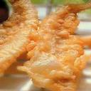
Breads up to 2lbs of fish
1 cup flour in a ziploc bag, for dusting
2 cups all-purpose flour
2 tablespoons cornstarch
2 teaspoons baking powder
1/2 teaspoon cayenne pepper
1/2 teaspoon garlic salt
2 1/2 cups ice water
4 cups peanut, canola, or olive oil, for deep-frying
2 pounds fish, cubed or striped
1. In a medium bowl, whisk together flour, cornstarch, baking powder, cayenne & garlic salt. Stir in 2 1/2 cups ice water, being careful not to overmix. Don’t worry if batter is lumpy. It should be the consistency of heavy cream; if it’s too thick, add more water, 1 tablespoon at a time.
2. Heat oven to 175°. Heat oil in a 3-quart saucepan to 375°. Put 4-6 pieces of fish in flour bag and toss until coated. One at a time, dredge into batter, coating completely. Lift it out, and hold it for a moment over bowl to let excess drip off, then drop it in oil. Fry only as many pieces of fish at a time as comfortably fit in the pan without touching. Adjust heat as needed to keep temperature at 375° during entire process. Fry fish until lightly browned on bottom, 2 minutes, then flip them with a wire skimmer to brown the other side. Drain on paper towels. Keep warm in oven. Repeat with remaining fish pieces and batter.
3. When all the fish is fried, sprinkle with salt. Transfer to a platter and serve immediately.
|
How to Clean and Store Your Fish
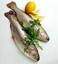
1. Ice fish down as soon as they are caught. Fish put on ice hold up much better when cleaning and are much less "fishy" tasting.
2. Use a good sharp filet knife in combination with a flat surface.
3. Flatten the fish out on the flat surface and make a slit through the belly of the fish, from just under the jaw down past the anal fin. Your knife should always be sharp for this step.
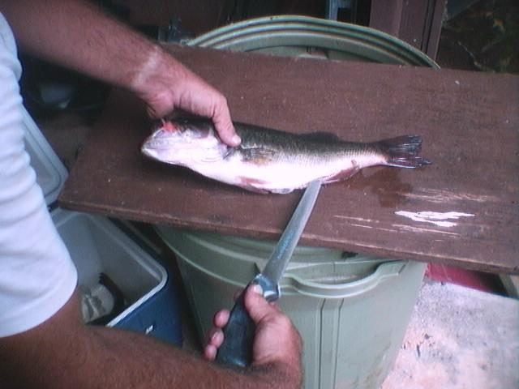
4. Lay the fish flat and cut across the body just behind the head. Cut down to the backbone but be careful not to cut thru it. When your blade hits the bone, turn it sideways and cut toward the tail, following the slit in the belly and cutting as close to the backbone as possible. Your knife needs to be extremely sharp to cut thru the rib bones during this step.
5. Follow the backbone to the tail, stopping the cut without cutting thru the skin at the tail. Let that skin hold the filet to the carcus and flip it flat. Starting at the tail, slice into the fish between the skin and the meat. Hold your knife stationary and pull the tail through with your other hand, back and forth until you have a skinless filet. You now have a filet with rib bones. Many people prefer to cut them out, ending up with a boneless, skinless filet.
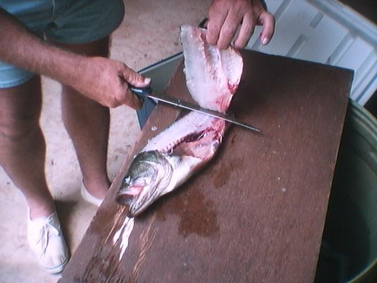
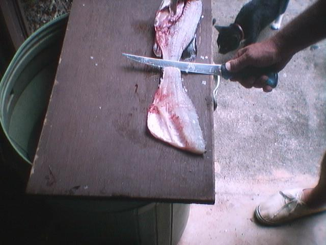
6. Now turn the fish over and repeat the process with the other side. You have two filets ready to cook or store.
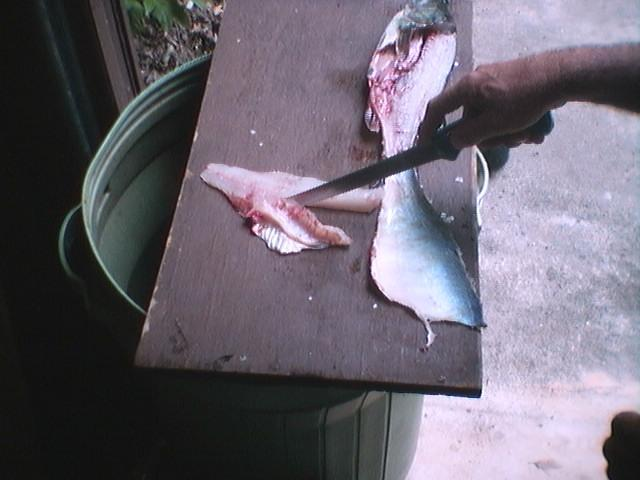
Unless you are planning to eat the fish right away, do not rinse with fresh water. Freeze as-is at this point. Vacuum packing is always best. If cooking right away or thawing to cook, rinse the fish off and cook as soon as possible.
|
|
{kind=link}
{kind=link}
{kind=link}
{kind=link}
{kind=link}
{kind=link}
{kind=link}
{kind=link}
{kind=link}
{kind=link}
{kind=link}
{kind=link}
{kind=link}